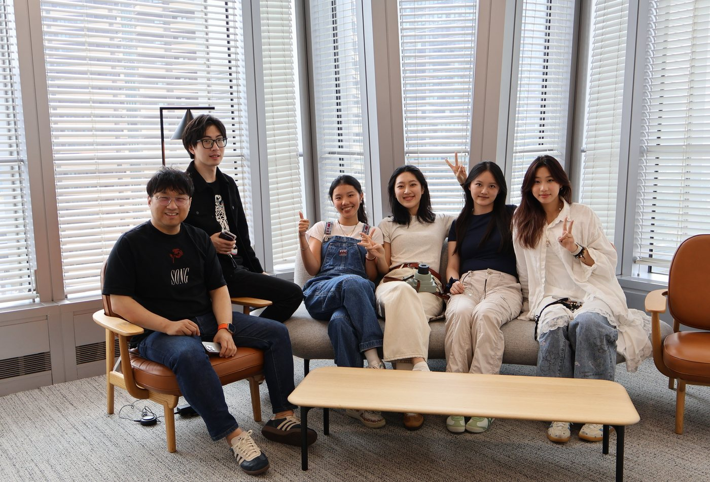
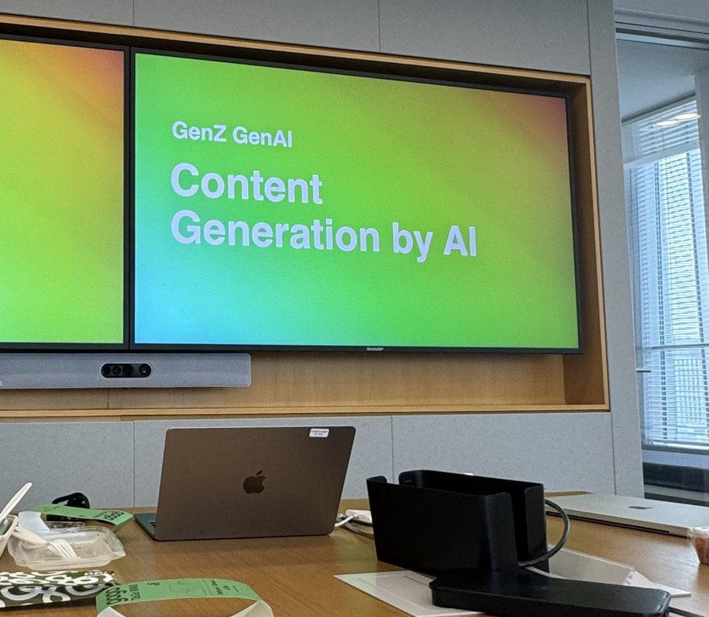
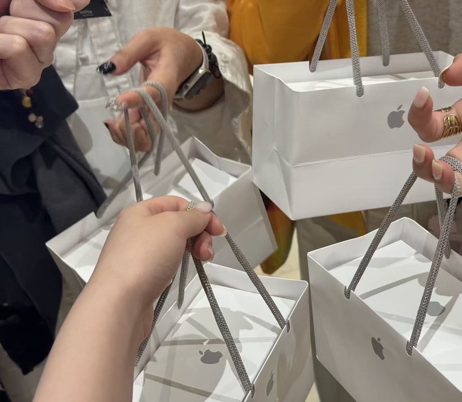
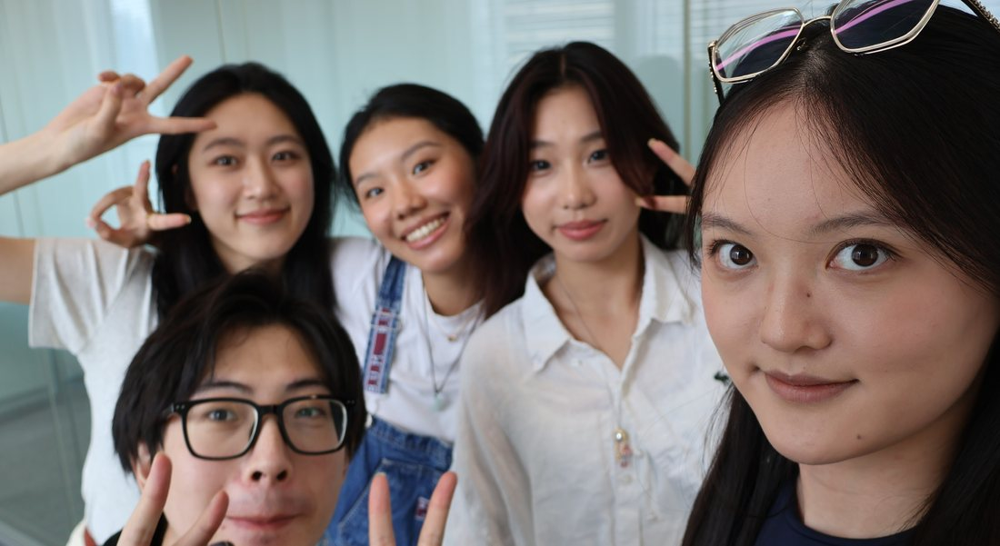

Content Generation
Context
I led the visual design of an internal AI-powered content-generation platform for Apple’s Marketing team in China — built to help a non-technical marketing team batch-produce on-brand posters, each customized with different logos, locations, and formats.
Beyond the core generation workflow, I designed how a built-in LLM fits into that experience (auto-drafting titles and subtitles) so the tool doesn’t just speed up production, it actively supports the creative process while keeping output on-brand.
The problem
Posters across regions shared the same core content but varied constantly in small, specific details — logo placement, location callouts, sizing for different channels. Producing those variations by hand was slow, repetitive, and left too much room for inconsistency at the scale the team needed.
Design goals
- Design a workflow that lets a non-design, non-technical team batch-generate on-brand posters through customizable parameters instead of one-off manual edits
- Design the UX around an integrated LLM so it reads as a creative assistant, cutting manual writing effort while keeping output consistent
- Translate a technical capability (LLM-generated copy, parameterized templates) into an interface simple enough for marketers with no design background to use confidently




Project information
While the product that I worked are on confidential, I’m happy to discuss my design and full process through a call!
Feel free to reach out to me at yunhanzh@andrew.cmu.edu